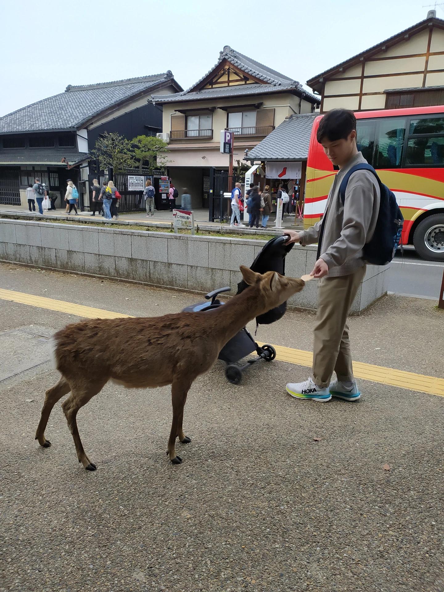
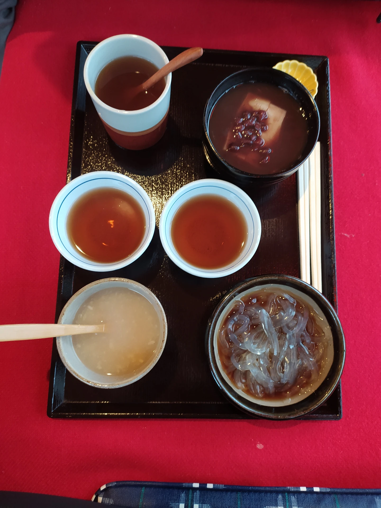
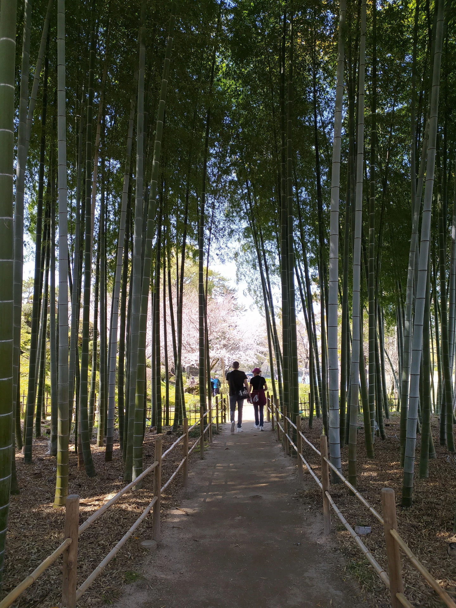
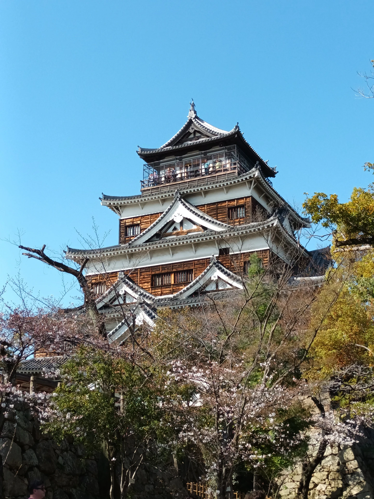

Výhled na Mt. Fuji

Zahrada v Hiroshimě

Chrám Kijomizu-dera v Kjótu

Sněžné opice v Jigokudani parku

Naruto & Boruto Shinobi-zato

Jeleni sika v Nara parku

Hrad v Osace

Občerstvení v Kjótu

Bambusový lesík v Hirošimě

Vesnice Shirakawa-go

Kvetoucí sakura

Hrad v Hirošimě